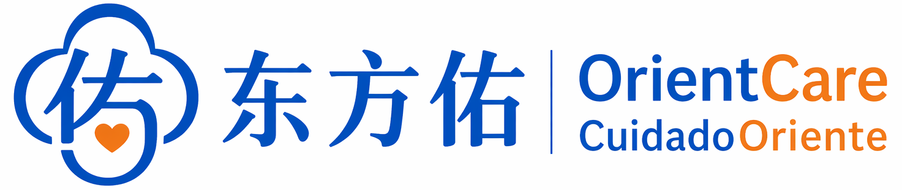
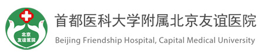

Me ayudaron a entender cada paso del hospital y llegar tranquila a mi consulta.
Paciente de México

Acompañamiento médico internacional en China
OrientCare ayuda a pacientes de habla hispana e inglesa a encontrar hospitales adecuados, coordinar citas y recibir acompañamiento cultural y lingüístico durante todo el proceso.
Opiniones breves
Me ayudaron a entender cada paso del hospital y llegar tranquila a mi consulta.
Paciente de México
La coordinación fue clara, rápida y muy humana desde antes del viaje.
Familia de Colombia
Tener apoyo en idioma y trámites hizo la visita médica mucho más sencilla.
Paciente de Chile
Nos sentimos acompañados en el hospital y también después de recibir los resultados.
Paciente de España
Sobre OrientCare
Para muchos pacientes extranjeros, venir a China para recibir atención médica implica elegir hospitales, preparar documentos, entender indicaciones clínicas y moverse en una ciudad nueva. OrientCare convierte ese recorrido en un proceso más claro, humano y coordinado.
Nuestro enfoque combina conocimiento local, sensibilidad intercultural y comunicación bilingüe para que cada persona sepa qué esperar antes, durante y después de su visita médica.
Orientación estructurada para elegir centros y especialistas adecuados.
Acompañamiento atento para reducir incertidumbre y tiempos perdidos.
Puentes de idioma y costumbres para que la atención se entienda mejor.
Productos y servicios
Revisión de necesidades, orientación de especialidades y opciones de hospitales en China.
Coordinación de reservas, listas de documentos y preparación previa a la visita.
Recepción, registro, navegación dentro del hospital y apoyo lingüístico durante la consulta.
Organización de resultados, indicaciones médicas y documentos relevantes para el paciente.
Apoyo con rutas urbanas, horarios, traslados y recomendaciones prácticas durante la estancia.
Recordatorios, coordinación de nuevas visitas y comunicación posterior con el centro médico.
Hospitals
Beijing
北京协和医院国际医疗部
Uno de los primeros hospitales chinos en atender a pacientes extranjeros; fuerte en enfermedades complejas, raras y graves.
Beijing
中国医学科学院阜外医院（北京）国际部
Apoyado por la “selección nacional” cardiovascular de China, ofrece atención especializada de alto nivel a pacientes locales e internacionales.
Beijing
中日友好医院国际部
Departamento internacional con servicio de alto nivel, atención multilingüe y capacidad integral de consulta, hospitalización y coordinación.

Beijing
北京友谊医院国际医疗中心
Centro internacional que ofrece servicios médicos, chequeos, gestión de salud y atención coordinada de alta calidad.
Beijing
北京天坛医院国际医疗部
Basado en fortalezas como neurocirugía y neurología, con edificio internacional independiente y recursos médicos integrados.
Beijing
北京儿童医院国际部
Operado desde comienzos de 2026, ofrece servicios pediátricos de alta gama respaldados por el National Center for Children's Health.
Beijing
广安门中医院国际部
Ventana internacional de medicina tradicional china, con servicios de consulta, hospitalización y cooperación con seguros internacionales.
Beijing
北京大学国际医院
Hospital general sin fines de lucro construido bajo estándar de tercer nivel clase A, con centro de medicina internacional.
Beijing
北京朝阳医院国际部
Departamento internacional con servicios en sedes múltiples, especialistas seleccionados y atención para pacientes internacionales.
Cómo trabajamos
Especialidad, ciudad, fechas y documentos disponibles.
Opciones de atención, citas y preparación antes de llegar.
Soporte durante la visita y seguimiento posterior.
Contacto
Comparta su ciudad de destino, especialidad médica y fechas aproximadas. Le responderemos con una primera orientación sobre el siguiente paso.